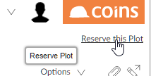
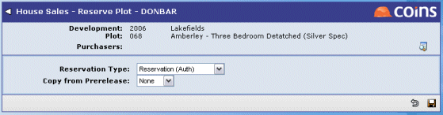

To reserve a plot:
- Go to Sales Workbench.
- Find the plot and open the plot summary.
NOTE
You can only reserve plots that are available. - Click the Reserve this plot link at the top right of the screen. (The wording of this link may be different, depending on how your system is set up.) 
- Choose which type of reservation it is. 
- If the customer reserving the plot already has a pre-release reservation, you can copy the details from the pre-release: select the customer's name. If the customer reserving the plot does not have a pre-release reservation, select None.
- Click
 .
.
- Fill in the details of the reservation. You do not have to fill in all the details of the reservation at once. You can come back to add more information later.
- To add details of the customer:
- Click the Customer Details tab.
- Enter the customer's names, then use the
 button to find the customer in the database or add the customer to the database.
button to find the customer in the database or add the customer to the database. - Fill in the remaining details on the Customer Details tab.
- When you have entered the reservation details, click .
- When you save the reservation,
- To complete the reservation, when you have added all the necessary information, click the Reservation Entry Complete link on the plot summary. (The wording of this link may be different, depending on how your system is set up.)